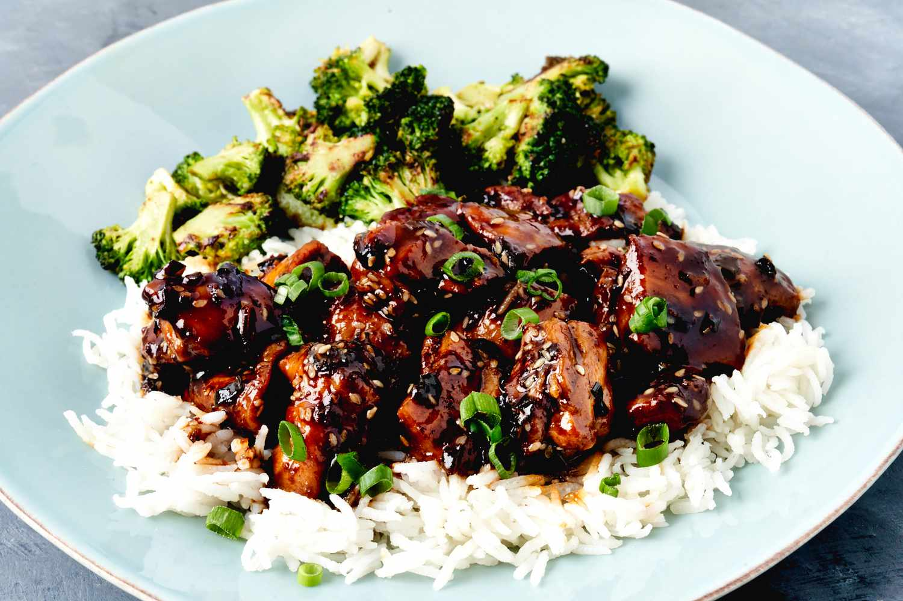

Chicken Teriyaki

Description
A plate of white rice, with chicken pieces covered in soy sauce, green onions and brocoli.
Ingredients
- 1 cup of low sodium soy sauce
- 1/4 cup of sake
- 3 tablespoons of rice vinegar
- 1/3 cup of brown sugar, or more to taste
- 1 tablespoon of white sesame seeds
- 1/4 tablespoon crushed red pepper
- 2 teaspoons of canola or peanut oil
- 1 teaspoon of toasted sesame oil
- 1 teaspoon of kosher salt
- 1/2 teaspoon of freshly ground black pepper
- 2 pounds boneless skinless chicken thighs cut into 1 1/2 inch pieces
- 2 teaspoons grated fresh ginger
- 1 teaspoon finely minced garlic
- 1 bunch green onions, thinly sliced, divided
- 1 1/2 cups cooked rice
Steps
- Combine soy sauce, sake, rice vinegar, brown sugar in a bowl and whisk well until sugar is dissolved.
- Stir in sesame seeds and crushed red pepper and set aside.
- Heat oils in a large skillet over high heat.
- Sprinkle salt and pepper evenly over chicken. Add chicken in a single layer to the skillet and cook, undisturbed until chicken is browned and releases easily from the pan, 4 to 6 minutes.
- Flip chicken pieces, cook 1 more minute and remove from pan;set aside.
- Reduce heat to medium and add ginger and garlic. Cook, stirring constantly, until fragrant, about 1 minute.
- Reserve 2 tablespoons of the green onions for garnish and add remaining green onions to the skillet.
- Cook for 1 minute. Add 1 cup reserved soy sauce mixture to the skillet and stir with a wooden spoon, scraping up any browned bits from the bottom of the skillet.
- Bring mixture to a boil and cook until sauce has reduced by about a third or until slightly thickened and glossy.
- Return chicken to the skillet and cook, stirring occasionally, until sauce is thickened slightly and chicken is coated in the sauce and cooked through.
- Serve over rice and sprinkled with reserved green onions.
Return about to Homepage